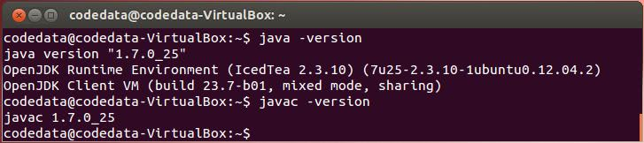
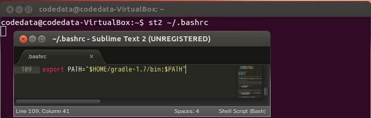
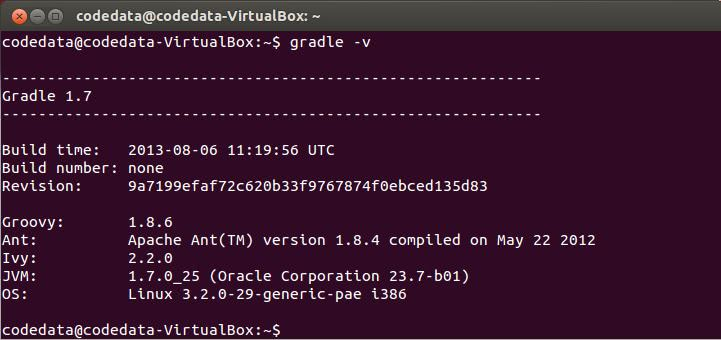

這門課程的作業系統，使用的是 Ubuntu 12.04 LTS，使用這個作業系統的原因是，希望這門課程可以有一個一致的環境，而這個環境不會因為作業系統版本更迭而造成一些初學者的困惑，你可以在一台全新的機器中，或者是在虛擬機器中標準安裝，接下來就可以進行後續的課程了。
準備課程環境
課程的相關範例原始碼會放在 Github 上，因此你要在 Ubuntu 中安裝 Git 客戶端，首先開啟終端機：{kind=link}
練習 0：安裝 Git 客戶端、Sublime Text 2 編輯器 之後，執行以下指令安裝
git：
$ sudo apt-get update
$ sudo apt-get install git安裝完成後，可以使用以下指令下載課程資料：
$ git clone https://github.com/codedata/JavaTutorial.git隨著課程的進行，課程範例等相關檔案會新增至 Github 上，如果想要取得最新的課程範例等相關檔案，可以執行以下指令：
$ git pull在編輯 Java 程式碼時，可以使用任何你慣用的編輯器，為了課程進行時的流暢，本課程環境使用 Sublime Text 2，這個版本可以免費用於評估，偶而會出現提示訊息詢問是否購買授權，撰寫這篇文章時的 Sublime Text 2 版本是 2.0.2，你可以使用以下指令下載、解壓縮、移動目錄與設定執行檔連結，之後就可以使用
st2 指令來開啟 Sublime Text 2：
$ wget http://c758482.r82.cf2.rackcdn.com/Sublime%20Text%202.0.2.tar.bz2
$ tar -xf "Sublime Text 2.0.2.tar.bz2"
$ sudo mv "Sublime Text 2" /usr/lib
$ sudo ln -s "/usr/lib/Sublime Text 2/sublime_text" /usr/bin/st2練習 1：安裝 OpenJDK 7
要在 Ubuntu 12.04 LTS 中安裝 JDK7，最簡單的方式就是安裝 OpenJDK 7 實作。請在終端機中輸入以下指令：
$ sudo apt-get install openjdk-7-jdk在相關檔案下載、安裝完成之後，JDK 相關工具程式就會在
PATH 路徑之中，因而你可以輸入以下指令，確認 OpenJDK 7 是否安裝完成，這個安裝的 OpenJDK 7 是經由 IcedTea 修補並通過了 JCK 相容測試，如 Java Tutorial 第一堂（1） 中談過的，如果使用 IcedTea 修補過後的 OpenJDK7，執行 java -version，就會顯示 java version 字樣。{kind=link}

練習 2：下載、安裝 Gradle
在 Java 中要開發應用程式，必須撰寫原始碼、編譯、執行，過程中必須指定類別路徑（Class path）、原始碼路徑（Source path），相關應用程式檔案必須使用工具程式建構（Build）以完成封裝與部署（Deploy），嚴謹的應用程式還有測試（Test）等工作階段 ...
像這類的工作，在開發過程中可能是有一定且重複性的流程，因而 Java 的世界中提供有建構工具（Build tool）來輔助開發人員，在建構工具中元老級的專案是 Ant（Another Neat Tool），使用 Ant 在專案結構上有很大的彈性，然而彈性的另一面就是鎖碎的設定 …
另一方面，類似專案會有類似慣例流程，如果能夠提供預設專案及相關慣例設定，對於開發將會有所幫助，這就是 Maven 後來興起的原因之一，除了提供預設專案及相關慣例設定之外，對於 Java 中程式庫或框架相依性問題，Maven 也提供了集中式貯藏室（Central repository） 解決方案 … 對於相依性管理問題，Ant 也結合了 Ivy 來進行解決 …
然而無論是 Ant Ivy、Maven，主要都使用 XML 進行設定，設定繁鎖，而且有較高的學習曲線，Gradle 結合了 Ant 與 Maven 的一些好的概念（像是 Task、Repository 等），並使用 Groovy 語言作為腳本設定，在設定上有了極大的簡化，並可以輕易地與 Ant、Maven 進行整合，種種優點吸引了不少開發者，有些重大專案也宣佈改用 Gradle 做為建構工具，像是 Java 領域中著名 ORM（Object-Relational Mapping）框架 Hibernate 就在 Gradle: why? 中宣佈從 Maven 遷移至 Gradle。
考量課程進行的簡易性，這門課中使用 Gradle 是比較適合的，接下來要介紹的，就是 Gradle 的下載與安裝，你可以如下取得 Gradle 最新版本 1.7 並解壓縮：
$ wget http://services.gradle.org/distributions/gradle-1.7-bin.zip
$ unzip gradle-1.7-bin.zip解壓縮之後，會有個 gradle-1.7 目錄，其中 bin 目錄放置了
gradle 執行檔，你可以使用 st2 ~/.bashrc 指令，編輯 .bashrc 中加入環境變數設定 export PATH="$HOME/gradle-1.7/bin:$PATH" 並存檔：
{kind=link}

之後重新啟動終端機，就可以使用
gradle 指令，可使用 gradle -v 得知 Gradle 版本：
{kind=link}

到這邊為止，課程環境大致準備好了，下一門課程就要來實際撰寫、編譯與執行 Java 程式，來看看如何撰寫第一個「哈囉！世界！」。